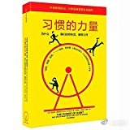

#读书#懂得很多道理,依然过不好这一生. 原因是缺乏行动.
但是行动靠思想和意志指引的情况下, 总是费力些. 一旦持续的行动形成习惯, 那么这种良好的行为就能不费力地保持下去. 谁不想拥有这种魔法呢? 这也是我读<习惯的力量>的原因.
个体习惯启发最大的是"习惯回路", 在旧习惯中发现提示和奖赏, 然后用新的行为替换掉旧的行为, 但保持这个习惯中的提示和奖赏不变. 这个黄金法则的用处还是蛮多的. 我在考虑用它来形成早起健身的习惯.
组织中的改变则需要先找到核心习惯. 美铝的商业例子写得相当吸引人, 新任CEO用安全第一,零工伤指标开始重塑了组织结构,流程和文化, 类似于找到一个点突破进去, 然后继续翘动其它, 合情合理, 任何人都得为不断扩大的波及面让路, 然后所有人都被改变.
美国民权运动为何会从一位不让座的黑人女性罗莎帕克开始, 这本书把过程和原因阐述得很详细. 朋友间的强联系以及社群间的弱联系, 是这个运动从一个小城开始, 能席卷全国的关键环节. 但对社会习惯的掌握和运用, 还是个大课题. 仅仅一两个例子, 不能揭示这里面的规律.
现在读书也会关注下作者的写作手法, 这本书故事性非常强, 通常都是用人物和案例开始, 画卷一般徐徐在你面前展开, 等你代入进入后, 会发现问题, 然后脑海里自然出现"怎么解决"的问号, 这时作者开始用专家代言, 抛出他的解释和理论. 然后, 你就觉得, 说得太对了. 你其实是完全按照作者设定的路径来阅读完这本书的, 就跟看剧一样. 所以, 这本书的阅读感很好, 不知不觉就读完了.
但是, 读完后我就有了这样的疑惑, 仅凭几个案例, 就能揭示规律吗? 这也太容易了些. 不过, 有启发, 总归是好的.
但是行动靠思想和意志指引的情况下, 总是费力些. 一旦持续的行动形成习惯, 那么这种良好的行为就能不费力地保持下去. 谁不想拥有这种魔法呢? 这也是我读<习惯的力量>的原因.
个体习惯启发最大的是"习惯回路", 在旧习惯中发现提示和奖赏, 然后用新的行为替换掉旧的行为, 但保持这个习惯中的提示和奖赏不变. 这个黄金法则的用处还是蛮多的. 我在考虑用它来形成早起健身的习惯.
组织中的改变则需要先找到核心习惯. 美铝的商业例子写得相当吸引人, 新任CEO用安全第一,零工伤指标开始重塑了组织结构,流程和文化, 类似于找到一个点突破进去, 然后继续翘动其它, 合情合理, 任何人都得为不断扩大的波及面让路, 然后所有人都被改变.
美国民权运动为何会从一位不让座的黑人女性罗莎帕克开始, 这本书把过程和原因阐述得很详细. 朋友间的强联系以及社群间的弱联系, 是这个运动从一个小城开始, 能席卷全国的关键环节. 但对社会习惯的掌握和运用, 还是个大课题. 仅仅一两个例子, 不能揭示这里面的规律.
现在读书也会关注下作者的写作手法, 这本书故事性非常强, 通常都是用人物和案例开始, 画卷一般徐徐在你面前展开, 等你代入进入后, 会发现问题, 然后脑海里自然出现"怎么解决"的问号, 这时作者开始用专家代言, 抛出他的解释和理论. 然后, 你就觉得, 说得太对了. 你其实是完全按照作者设定的路径来阅读完这本书的, 就跟看剧一样. 所以, 这本书的阅读感很好, 不知不觉就读完了.
但是, 读完后我就有了这样的疑惑, 仅凭几个案例, 就能揭示规律吗? 这也太容易了些. 不过, 有启发, 总归是好的.
- 